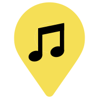

MAP HELP
Click any location pin on the map to display more information about that event.

Click on the my location button located at the top right to return to your original location.
Use the filter/key menu, located in the top right of the map, to toggle what type of locations are visibile on the map, or to view the map key.